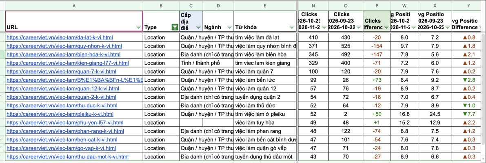
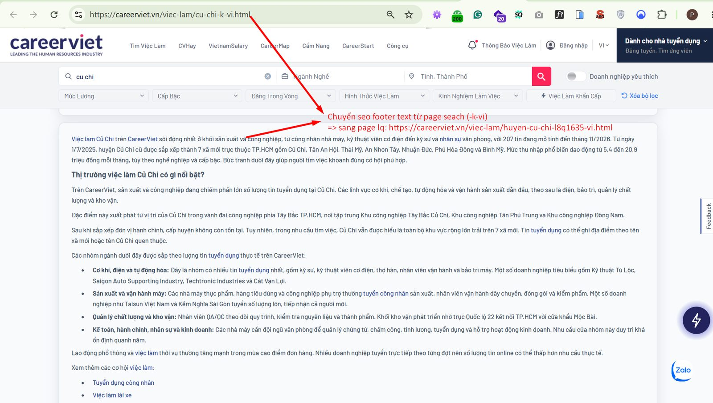
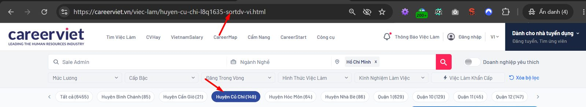
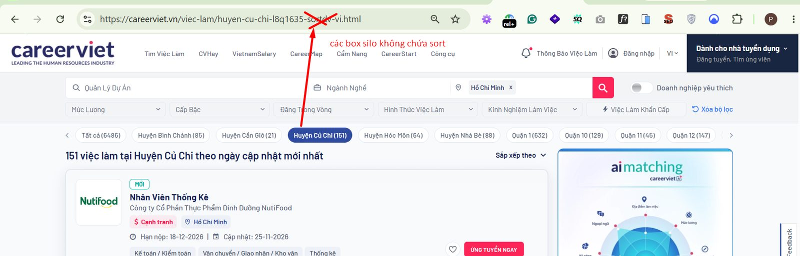
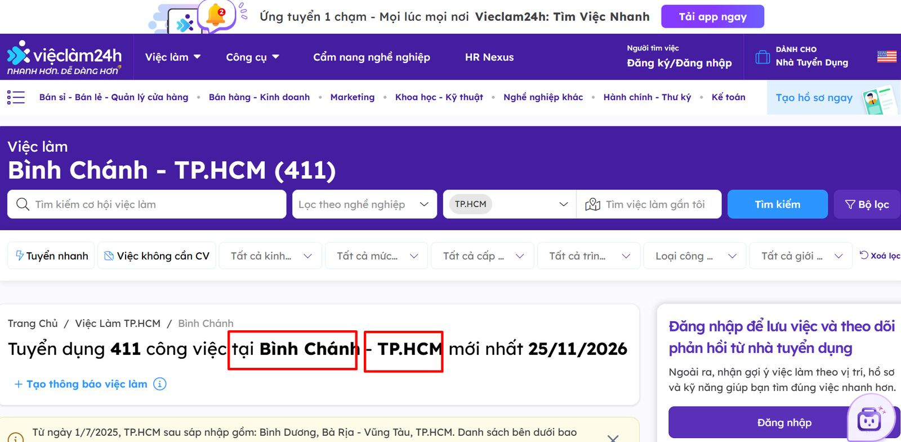
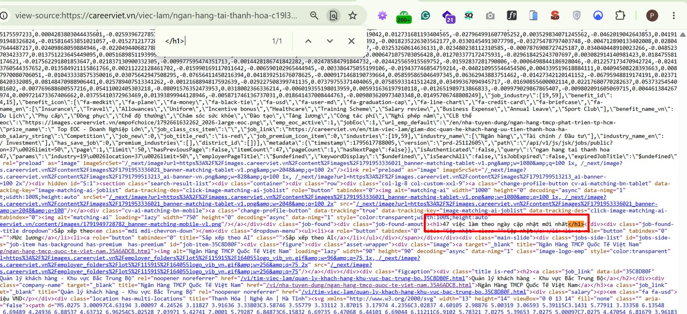
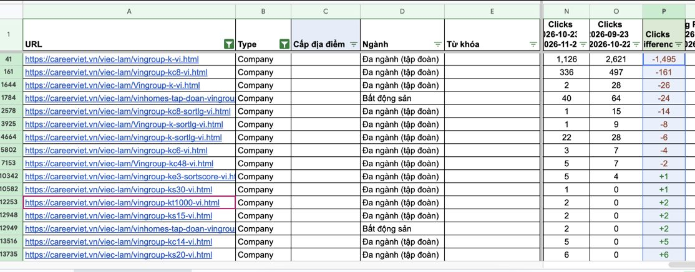
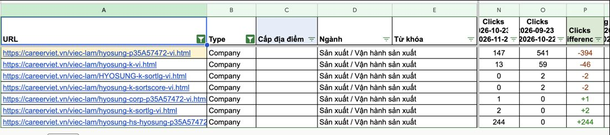
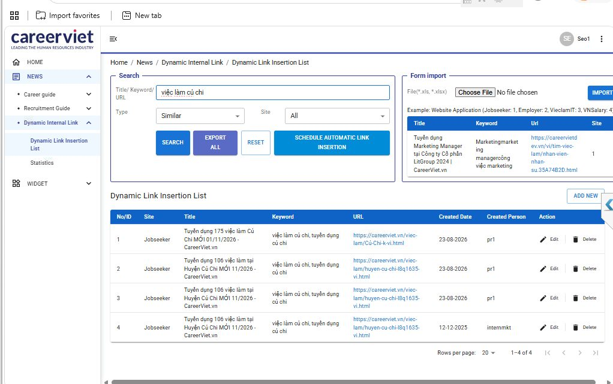

CareerViet: Clicks và Impressions của Job Listing theo nhóm intent, 23/09–22/10 so với 23/10–21/11/2026
Tài liệu đi kèm tài liệu các lỗi kỹ thuật ngày 26/11. Tài liệu trình bày ba nhóm intent có Clicks giảm nhiều nhất trên Google Search Console và phần link nội bộ tự động ảnh hưởng mọi nhóm. Mỗi nhóm có số liệu hai kỳ, rồi đến các nguyên nhân theo thứ tự đánh giá của nhóm SEO GTV, mỗi nguyên nhân kèm hướng xử lý, mã task trong checklist v3 và mục tương ứng trong tài liệu 26/11.
- Giữa hai kỳ 30 ngày, Job Listing có Clicks 244.144 → 171.462 (-29,8%). Ba nhóm intent chiếm 90% phần Clicks giảm: Job x Location & Quận/huyện 40,8%, Title/Industry 29,5%, Company 19,9%.
- Impressions giảm từ 05/10, ngày cuối đợt golive kỹ thuật 02–05/10; Clicks thấp hơn mức nền 24,3% trong 22/10–10/11 (thấp hơn 17,4% sau khi trừ mùa vụ). Từ 11/11 có thêm Google November 2026 core update.
- Nguyên nhân chung của nhóm Location và Title/Industry là H1 trong mã nguồn thiếu tên địa điểm và tên ngành; nhóm SEO đề xuất xử lý trước. Nhóm quận/huyện thêm vấn đề Google chọn URL
-kthay vì trang quận; nhóm Title/Industry và Company thêm vấn đề nhiều URL cho cùng một từ khoá.
Cách đọc tài liệu và phạm vi dữ liệu
- Hai kỳ so sánh: 23/09–22/10/2026 và 23/10–21/11/2026, mỗi kỳ 30 ngày, lấy từ tab «URL JL tối ưu T11» (Search Console, 14.727 URL Job Listing). Kỳ sau có 11 ngày nằm trong core update (11–21/11), nên số hai kỳ là tổng của mọi yếu tố.
- Nhóm intent theo cột «Type» do nhóm SEO GTV phân loại cho từng URL. Nhóm 1 gồm Location (tỉnh, quận/huyện, địa danh) và Title x Location (bộ lọc chức danh hoặc ngành có kết hợp địa điểm), vì các nguyên nhân về địa điểm áp cho cả hai. Nhóm 3 gồm Company và Company x Location.
- Mốc thời gian: Search Console theo ngày 01/09–24/11/2026; Job Listing = trang chứa
/viec-lamtrừ/viec-lam-tuong-tu/; mức nền là trung bình cùng thứ trong tuần của 14/09–04/10. - Đặc điểm HTML đo ngày 27/11/2026 trên 803 URL bằng
curlvới User-Agent Googlebot Smartphone. Từ khoá theo dõi: SpySERP các lần đo 22/10–23/11. Average positiontăng nghĩa là vị trí trung bình lùi xuống. Tên chỉ số giữ đúng chữ trên Search Console.
Bảng tổng hợp theo nhóm intent
| Nhóm intent | URL | Clicks 23/09–22/10 | Clicks 23/10–21/11 | Clicks thay đổi | Phần trong Clicks giảm | Impressions thay đổi | Average position | Số nguyên nhân |
|---|---|---|---|---|---|---|---|---|
| 1. Job x Location & Quận/huyện | 7.214 | 115.137 | 85.506 | -25,7% | 40,8% | -25,4% | 7,8 → 8,7 | 7 |
| 2. Title/Industry | 5.123 | 59.279 | 37.832 | -36,2% | 29,5% | -56,6% | 7,9 → 10,1 | 3 |
| 3. Company | 1.829 | 50.807 | 36.307 | -28,5% | 19,9% | -30,7% | 6,2 → 6,6 | 2 |
| Nhóm khác (Work mode, Level, Abroad, Brand…) | 561 | 18.921 | 11.817 | -37,5% | 9,8% | -42,8% | 6,8 → 9,9 | — |
| Tổng Job Listing | 14.727 | 244.144 | 171.462 | -29,8% | 100% | -36,9% | 7,4 → 8,8 | 12 + 4 link tự động |
Danh sách nguyên nhân theo thứ tự trình bày
| Nhóm | Nguyên nhân | Task checklist v3 | Mục tài liệu 26/11 |
|---|---|---|---|
| 1. Job x Location | Nguyên nhân 1: Từ khoá việc làm quận/huyện đang được Google xếp hạng bằng URL tìm kiếm -k thay vì trang quận chính thức -lNqN | 5.1 | mục 5 · đường vào trang quận |
| 1. Job x Location | Nguyên nhân 2: H1 trong mã nguồn thiếu tên địa điểm ở trang tỉnh, quận/huyện và mọi bộ lọc có kết hợp địa điểm Ưu tiên xử lý trước | 3.1 | mục 3 · H1 |
| 1. Job x Location | Nguyên nhân 3: Một quận có hai URL: trang quận -lNqN và URL tìm kiếm -k; nội dung SEO đang đặt ở URL -k | 5.2 | mục 6 · URL rỗng, chuẩn hoá URL |
| 1. Job x Location | Nguyên nhân 4: Lượt truy cập vào URL quận có sort nhiều hơn URL quận chính thức, do khối silo dẫn tới URL có sort | 5.3 | mục 5 · đường vào trang quận |
| 1. Job x Location | Nguyên nhân 5: URL có sort đã canonical về bản không sort nhưng vẫn nhận nhiều lượt truy cập; Google coi các URL này là bản trùng lặp | 6.1, 6.2 | mục 11 · lỗi nhỏ, trang sort, link tự gắn |
| 1. Job x Location | Nguyên nhân 6: Trang quận chưa nhận link từ cấu trúc chung, chưa có liên kết tỉnh (cha) – quận (con) | 5.4, 5.3, 5.5 | mục 5 · đường vào trang quận |
| 1. Job x Location | Nguyên nhân 7: Trang Job Listing nhóm địa điểm và các bộ lọc có địa điểm chưa phản ánh đơn vị hành chính mới | 3.2 | mục 3 · H1 |
| 2. Title/Industry | Nguyên nhân 1: H1 trong mã nguồn thiếu tên ngành ở trang ngành và mọi bộ lọc có kết hợp ngành Ưu tiên xử lý trước | 3.1 | mục 3 · H1 |
| 2. Title/Industry | Nguyên nhân 2: Nhiều URL cùng nhắm một từ khoá nhưng khác chữ hoa, dấu, bộ lọc hoặc sort, cạnh tranh trực tiếp với URL chính không dấu | 4.1 | mục 6 · URL rỗng, chuẩn hoá URL |
| 2. Title/Industry | Nguyên nhân 3: URL có dấu, chữ hoa vẫn nhận link và lượt truy cập; Googlebot thấy hai phiên bản có nội dung giống nhau | 4.2, 4.4, 6.2 | mục 6 · URL rỗng, chuẩn hoá URL |
| 3. Company | Nguyên nhân 1: Từ khoá công ty được Google xếp hạng luân phiên giữa nhiều URL: /vi/nha-tuyen-dung/, trang tìm kiếm -k, trang công ty -p và URL có sort | 7.1, 7.2, 4.4 | mục 6 · URL rỗng, chuẩn hoá URL |
| 3. Company | Nguyên nhân 2: Một số công ty có lượng tìm kiếm cao đang hết hoặc ít tin (VinFast, Vingroup) Ngoài phạm vi kỹ thuật | — | — |
| 4. Link tự động | Nguyên nhân 1: Biến {updated_month} in lặp chữ «tháng tháng 11/2026» | 9.1 | mục 11 · lỗi nhỏ, trang sort, link tự gắn |
| 4. Link tự động | Nguyên nhân 2: Link đầu đoạn mở bài trỏ về chính trang, tooltip giữ số tin cũ, lệch với số trên trang | 9.2 | mục 11 · lỗi nhỏ, trang sort, link tự gắn |
| 4. Link tự động | Nguyên nhân 3: Công cụ gắn link tự động bắt sai cụm từ | 9.3 | mục 11 · lỗi nhỏ, trang sort, link tự gắn |
| 4. Link tự động | Nguyên nhân 4: Link nội bộ trỏ tới URL -k có dấu tiếng Việt và viết hoa lẫn lộn | 4.3, 4.2 | mục 6 · URL rỗng, chuẩn hoá URL · mục 11 · lỗi nhỏ, trang sort, link tự gắn |
Diễn biến Clicks và Impressions của Job Listing theo tuần, 14/09–22/11/2026
1. Nhóm Job x Location & Quận/huyện: số liệu, nguyên nhân và hướng xử lý
-lNqN giảm -87,2% (1.761 → 226), trong khi trang tỉnh giữ Average position (6,4 → 6,3). Bảy nguyên nhân dưới đây theo thứ tự đánh giá của nhóm SEO; nguyên nhân 2 (H1) được đề xuất xử lý trước.Số liệu hai kỳ
| Nhóm / phần | URL | Clicks 23/09–22/10 | Clicks 23/10–21/11 | Clicks thay đổi | Phần trong Clicks giảm | Impressions thay đổi | Average position |
|---|---|---|---|---|---|---|---|
| Location | 814 | 48.782 | 33.923 | -30,5% | 20,4% | -25,4% | 7,0 → 7,5 |
| — Tỉnh / thành phố | 67 | 35.409 | 25.188 | -28,9% | 14,1% | -25,8% | 6,4 → 6,3 |
| — Quận / huyện / TP thuộc tỉnh | 73 | 4.010 | 2.515 | -37,3% | 2,1% | -23,4% | 7,7 → 8,4 |
| — Địa danh (chỉ có trang từ khoá) | 153 | 3.647 | 2.290 | -37,2% | 1,9% | -22,9% | 7,7 → 10,0 |
| Title x Location (bộ lọc có kết hợp địa điểm) | 6.400 | 66.355 | 51.583 | -22,3% | 20,3% | -25,3% | 8,9 → 10,3 |
| — Ngành × tỉnh (-cNlN) | 1.025 | 31.792 | 22.272 | -29,9% | 13,1% | -34,1% | 8,9 → 9,9 |
| — Từ khoá × tỉnh (-kl) | 4.274 | 29.824 | 26.368 | -11,6% | 4,8% | -12,6% | 8,9 → 10,5 |
| URL quận chính thức -lNqN (mọi nhóm) | 381 | 1.761 | 226 | -87,2% | 2,1% | -92,4% | 8,9 → 9,3 |
| Nhóm từ khoá theo dõi (SpySERP) | 22/10 | 29/10 | 05/11 | 12/11 | 19/11 | 23/11 |
|---|---|---|---|---|---|---|
| Location | 22% 120/553 | 25% 130/511 | 33% 168/503 | 21% 111/527 | 11% 61/537 | 10% 54/527 |
| Title x Location | 49% 134/275 | 45% 115/256 | 60% 350/582 | 60% 352/587 | 49% 279/573 | 44% 247/558 |
Tỷ lệ từ khoá CareerViet đứng Top 3; số dưới mỗi ô là số từ khoá Top 3 / số từ khoá có thứ hạng trong lần đo (bộ từ khoá thay đổi giữa các lần đo, nên so tỷ lệ).
10 URL có Clicks giảm nhiều nhất trong nhóm
| URL | Clicks trước → sau | Impressions | Average position | HTML 27/11 |
|---|---|---|---|---|
| https://careerviet.vn/viec-lam/ho-chi-minh-l8-vi.html | 8.111 → 6.185 | -19,1% | 4,9 → 4,9 | 4,14 MB · H1 sau 2 MB |
| https://careerviet.vn/viec-lam/can-tho-l71-vi.html | 1.867 → 1.304 | -29,3% | 7,1 → 8,2 | 4,05 MB · H1 sau 2 MB |
| https://careerviet.vn/viec-lam/ba-ria-vung-tau-l64-vi.html | 1.235 → 733 | -16,7% | 4,4 → 4,7 | 4,13 MB · H1 sau 2 MB |
| https://careerviet.vn/viec-lam/binh-duong-l650-vi.html | 2.009 → 1.545 | -19,6% | 5,7 → 5,4 | 4,14 MB · H1 sau 2 MB |
| https://careerviet.vn/viec-lam/quang-ngai-l55-vi.html | 920 → 507 | -35,3% | 6,5 → 7,6 | 4,19 MB · H1 sau 2 MB |
| https://careerviet.vn/viec-lam/dong-nai-l61-vi.html | 1.722 → 1.329 | -31,2% | 11,0 → 5,1 | 4,13 MB · H1 sau 2 MB |
| https://careerviet.vn/viec-lam/ha-noi-l4-vi.html | 1.815 → 1.454 | -28,3% | 7,7 → 6,2 | 4,18 MB · H1 sau 2 MB |
| https://careerviet.vn/viec-lam/da-nang-l511-vi.html | 1.152 → 870 | -23,5% | 7,9 → 7,0 | 4,08 MB · H1 sau 2 MB |
| https://careerviet.vn/viec-lam/thua-thien-hue-l54-vi.html | 823 → 548 | -28,1% | 5,6 → 6,7 | 4,21 MB · H1 sau 2 MB |
| https://careerviet.vn/viec-lam/tay-ninh-l66-vi.html | 791 → 534 | -30,1% | 4,8 → 5,3 | 4,19 MB · H1 sau 2 MB |
«—» ở cột HTML: URL chưa nằm trong mẫu 803 URL đo ngày 27/11.
10 URL quận chính thức -lNqN có Clicks giảm nhiều nhất
«—» ở cột HTML: URL chưa nằm trong mẫu 803 URL đo ngày 27/11.
Nguyên nhân và hướng xử lý
Nguyên nhân 1: Từ khoá việc làm quận/huyện đang được Google xếp hạng bằng URL tìm kiếm -k thay vì trang quận chính thức -lNqN
URL -k không nhận link nội bộ như trang quận chính thức (menu, bộ lọc khu vực, khối quận đều trỏ về -lNqN), nên có ít tín hiệu hơn và khó giữ thứ hạng. Một số truy vấn Google trả về trang tỉnh lớn (Hồ Chí Minh) hoặc trang việc làm tương tự không cùng chủ đề. Truy vấn mẫu: việc làm quận 4, việc làm quận 11, việc làm Củ Chi, việc làm Thanh Hoá.
Số liệu hai kỳ: nhóm trang quận chính thức có Clicks 1.761 → 226; trong khi https://careerviet.vn/viec-lam/cu-chi-k-vi.html 262 → 219, còn https://careerviet.vn/viec-lam/huyen-cu-chi-l8q1635-vi.html 31 → 0.



Hướng xử lý 1: Đặt URL đích của toàn bộ từ khoá quận/huyện là trang quận chính thức -lNqN. Ví dụ «việc làm Củ Chi» → huyen-cu-chi-l8q1635-vi.html, không dùng cu-chi-k-vi.html.
Checklist v3: task 5.1 · Tài liệu kỹ thuật 26/11: mục 5 · đường vào trang quận
Nguyên nhân 2: H1 trong mã nguồn thiếu tên địa điểm ở trang tỉnh, quận/huyện và mọi bộ lọc có kết hợp địa điểm Ưu tiên xử lý trước
Mã nguồn máy chủ trả về H1 chỉ có số tin và cụm sắp xếp; tên tỉnh, quận chỉ được JavaScript thêm vào sau. Nhóm SEO GTV xếp nguyên nhân này xử lý trước.
- https://careerviet.vn/viec-lam/huyen-cu-chi-l8q1635-vi.html: «151 việc làm theo ngày cập nhật mới nhất»
- https://careerviet.vn/viec-lam/ho-chi-minh-l8-vi.html: «6,486 việc làm theo ngày cập nhật mới nhất»
- https://careerviet.vn/viec-lam/ke-toan-kiem-toan-tai-ho-chi-minh-c2l8-vi.html (ngành × tỉnh): «837 việc làm theo ngày cập nhật mới nhất»
- https://careerviet.vn/viec-lam/duoc-si-tai-ho-chi-minh-kl8-vi.html (từ khoá × tỉnh): «42 việc làm Dược sĩ», thiếu «tại Hồ Chí Minh»

Hướng xử lý 2: Dựng đủ H1 ngay trong HTML máy chủ trả về, không chờ JavaScript bổ sung; áp cho trang địa điểm và mọi URL bộ lọc có kết hợp địa điểm.
Checklist v3: task 3.1 · Tài liệu kỹ thuật 26/11: mục 3 · H1
Nguyên nhân 3: Một quận có hai URL: trang quận -lNqN và URL tìm kiếm -k; nội dung SEO đang đặt ở URL -k
- https://careerviet.vn/viec-lam/cu-chi-k-vi.html
- https://careerviet.vn/viec-lam/huyen-cu-chi-l8q1635-vi.html

Hướng xử lý 3: Chuyển toàn bộ nội dung đang tối ưu ở URL -k sang trang quận chính thức -lNqN, xoá nội dung ở URL -k.
Checklist v3: task 5.2 · Tài liệu kỹ thuật 26/11: mục 6 · URL rỗng, chuẩn hoá URL
Nguyên nhân 4: Lượt truy cập vào URL quận có sort nhiều hơn URL quận chính thức, do khối silo dẫn tới URL có sort
Chip quận trong khối silo trỏ tới URL có -sortdv, ví dụ huyen-cu-chi-l8q1635-sortdv-vi.html, nên lượt truy cập và link nội bộ dồn vào URL có sort.


Hướng xử lý 4: Link quận/huyện trong khối silo dùng URL chính thức, không chứa sort: https://careerviet.vn/viec-lam/huyen-cu-chi-l8q1635-vi.html.
Checklist v3: task 5.3 · Tài liệu kỹ thuật 26/11: mục 5 · đường vào trang quận
Nguyên nhân 5: URL có sort đã canonical về bản không sort nhưng vẫn nhận nhiều lượt truy cập; Google coi các URL này là bản trùng lặp
Tín hiệu chia giữa URL quận có sort và URL quận chính thức nên URL chính thức khó giữ thứ hạng. Trên toàn Job Listing, 1.334 URL có sort nhận 6.308 → 4.190 Clicks (−33,6%) giữa hai kỳ.

Hướng xử lý 5: Gỡ sort khỏi khối quận và mọi link nội bộ; giữ canonical về bản không sort, không gắn thêm noindex; sau khi link đã đổi, gửi yêu cầu Removals trên Search Console cho các URL có sort đang được indexiTài liệu Search Console về công cụ Removals: "A successful request lasts only about six months." và "You must take additional steps to remove the URL permanently." → Yêu cầu chỉ có hiệu lực khoảng 6 tháng; muốn loại URL vĩnh viễn cần thêm 301, canonical hoặc noindex. Xem tài liệu.
Checklist v3: task 6.1, 6.2 · Tài liệu kỹ thuật 26/11: mục 11 · lỗi nhỏ, trang sort, link tự gắn
Nguyên nhân 6: Trang quận chưa nhận link từ cấu trúc chung, chưa có liên kết tỉnh (cha) – quận (con)
Thứ hạng của cụm quận đang thấp, nhiều từ khoá không có URL quận ở trang 1. TopCV, VietnamWorks và Vieclam24h đã có cấp quận/huyện trong menu khu vực.

Hướng xử lý 6: Thêm cấp quận/huyện (tầng 2) vào menu khu vực, để nhóm URL -lNqN được hiểu đúng cấu trúc và được xếp hạng đúng URL.
Checklist v3: task 5.4, 5.3, 5.5 · Tài liệu kỹ thuật 26/11: mục 5 · đường vào trang quận
Nguyên nhân 7: Trang Job Listing nhóm địa điểm và các bộ lọc có địa điểm chưa phản ánh đơn vị hành chính mới
Trang quận chưa có thông báo về thay đổi đơn vị hành chính; heading và title chỉ có tên quận, chưa kèm tỉnh/thành.


Hướng xử lý 7: Đổi heading và title sang dạng «việc làm + quận/huyện - tỉnh/thành phố». Mới: «Tuyển dụng 150 Việc làm tại Củ Chi - Hồ Chí Minh mới nhất 25/11/2026». Cũ: «150 việc làm tại Huyện Củ Chi theo ngày cập nhật mới nhất».
Checklist v3: task 3.2 · Tài liệu kỹ thuật 26/11: mục 3 · H1
2. Nhóm Title/Industry: số liệu, nguyên nhân và hướng xử lý
-k. Ba nguyên nhân: H1 thiếu tên ngành, nhiều URL cùng nhắm một từ khoá, và link vẫn trỏ tới URL có dấu/chữ hoa.Số liệu hai kỳ
| Nhóm / phần | URL | Clicks 23/09–22/10 | Clicks 23/10–21/11 | Clicks thay đổi | Phần trong Clicks giảm | Impressions thay đổi | Average position |
|---|---|---|---|---|---|---|---|
| Title/Industry | 5.123 | 59.279 | 37.832 | -36,2% | 29,5% | -56,6% | 7,9 → 10,1 |
| — Trang từ khoá chức danh (-k) | 4.776 | 51.369 | 32.692 | -36,4% | 25,7% | -58,1% | 7,5 → 10,0 |
| — Trang ngành (-c) | 69 | 6.302 | 4.098 | -35,0% | 3,0% | -45,0% | 10,3 → 10,6 |
| URL có dấu hoặc chữ hoa (mọi nhóm) | 3.211 | 28.004 | 16.742 | -40,2% | 15,5% | -44,6% | 8,6 → 10,4 |
| Nhóm từ khoá theo dõi (SpySERP) | 22/10 | 29/10 | 05/11 | 12/11 | 19/11 | 23/11 |
|---|---|---|---|---|---|---|
| Title/Industry | 57% 1396/2447 | 57% 1286/2258 | 58% 1685/2900 | 57% 1665/2945 | 44% 1300/2940 | 39% 1130/2921 |
Tỷ lệ từ khoá CareerViet đứng Top 3; số dưới mỗi ô là số từ khoá Top 3 / số từ khoá có thứ hạng trong lần đo (bộ từ khoá thay đổi giữa các lần đo, nên so tỷ lệ).
10 URL có Clicks giảm nhiều nhất trong nhóm
«—» ở cột HTML: URL chưa nằm trong mẫu 803 URL đo ngày 27/11.
Nguyên nhân và hướng xử lý
Nguyên nhân 1: H1 trong mã nguồn thiếu tên ngành ở trang ngành và mọi bộ lọc có kết hợp ngành Ưu tiên xử lý trước
- https://careerviet.vn/viec-lam/dau-khi-c26-vi.html: mã nguồn «74 việc làm theo ngày cập nhật mới nhất», trình duyệt hiển thị «74 việc làm Dầu khí theo ngày cập nhật mới nhất»
- https://careerviet.vn/viec-lam/cntt-phan-mem-c1e1-vi.html (ngành × cấp bậc): «14 việc làm theo ngày cập nhật mới nhất»
- https://careerviet.vn/viec-lam/luat-phap-ly-ngan-hang-c24,19e1d14-vi.html (2 ngành × cấp bậc × ngày đăng): «15 việc làm theo tiêu chí phụ đăng 14 ngày theo ngày cập nhật mới nhất»
- https://careerviet.vn/viec-lam/phap-che-kc19-vi.html (từ khoá × ngành): «54 việc làm phap che», thiếu «Ngân hàng»

Hướng xử lý 1: Dựng đủ H1 ngay trong HTML máy chủ trả về; áp cho trang ngành và mọi URL bộ lọc có kết hợp ngành.
Checklist v3: task 3.1 · Tài liệu kỹ thuật 26/11: mục 3 · H1
Nguyên nhân 2: Nhiều URL cùng nhắm một từ khoá nhưng khác chữ hoa, dấu, bộ lọc hoặc sort, cạnh tranh trực tiếp với URL chính không dấu
Site còn nhiều URL có dấu và viết hoa từ trước, chưa được xử lý. Giữa hai kỳ, 3.211 URL có dấu hoặc chữ hoa (11,5% Clicks Job Listing kỳ trước) nhận 28.004 → 16.742 Clicks (−40,2%; toàn Job Listing −29,8%).
Hướng xử lý 2: 301 toàn bộ URL có dấu, chữ hoa về URL không dấu chính thức.
Checklist v3: task 4.1 · Tài liệu kỹ thuật 26/11: mục 6 · URL rỗng, chuẩn hoá URL
Nguyên nhân 3: URL có dấu, chữ hoa vẫn nhận link và lượt truy cập; Googlebot thấy hai phiên bản có nội dung giống nhau
Nơi đang tạo link tới URL có dấu, chữ hoa: khối chân trang «Việc làm phổ biến» và footer toàn site «Việc làm theo vị trí».


Hướng xử lý 3: Gỡ link tới URL có dấu, chữ hoa ở hai khối trên; thêm trường «Canonical thủ công» trong CMS để chủ động canonical các trang có nội dung tương tự; sau khi 301 đã live, gửi yêu cầu Removals cho URL có dấu, chữ hoa, sort đang được indexiTài liệu Search Console về công cụ Removals: "A successful request lasts only about six months." và "You must take additional steps to remove the URL permanently." → Yêu cầu chỉ có hiệu lực khoảng 6 tháng; muốn loại URL vĩnh viễn cần thêm 301, canonical hoặc noindex. Xem tài liệu.
Checklist v3: task 4.2, 4.4, 6.2 · Tài liệu kỹ thuật 26/11: mục 6 · URL rỗng, chuẩn hoá URL
3. Nhóm Company: số liệu, nguyên nhân và hướng xử lý
-k giảm -34,7%, trang công ty -p giảm -21,6% và giữ Average position 5,9. Hai nguyên nhân: từ khoá công ty chia cho nhiều URL, và một số công ty có lượng tìm kiếm cao đang hết tin.Số liệu hai kỳ
| Nhóm / phần | URL | Clicks 23/09–22/10 | Clicks 23/10–21/11 | Clicks thay đổi | Phần trong Clicks giảm | Impressions thay đổi | Average position |
|---|---|---|---|---|---|---|---|
| Company + Company x Location | 1.829 | 50.807 | 36.307 | -28,5% | 19,9% | -30,7% | 6,2 → 6,6 |
| — Trang tìm kiếm tên công ty (-k, -kl) | 1.056 | 26.052 | 17.018 | -34,7% | 12,4% | -34,9% | 6,4 → 7,0 |
| — Trang công ty (-p) | 617 | 23.182 | 18.184 | -21,6% | 6,9% | -26,9% | 5,9 → 5,9 |
| Nhóm từ khoá theo dõi (SpySERP) | 22/10 | 29/10 | 05/11 | 12/11 | 19/11 | 23/11 |
|---|---|---|---|---|---|---|
| Company | 34% 183/545 | 39% 148/377 | 35% 167/476 | 39% 182/472 | 31% 145/464 | 32% 158/492 |
Tỷ lệ từ khoá CareerViet đứng Top 3; số dưới mỗi ô là số từ khoá Top 3 / số từ khoá có thứ hạng trong lần đo (bộ từ khoá thay đổi giữa các lần đo, nên so tỷ lệ).
10 URL có Clicks giảm nhiều nhất trong nhóm
| URL | Clicks trước → sau | Impressions | Average position | HTML 27/11 |
|---|---|---|---|---|
| https://careerviet.vn/viec-lam/vingroup-k-vi.html | 2.621 → 1.126 | -31,4% | 4,8 → 5,9 | — |
| https://careerviet.vn/viec-lam/vinfast-k-vi.html | 1.460 → 529 | -51,9% | 5,9 → 7,3 | — |
| https://careerviet.vn/viec-lam/cong-ty-co-phan-vacxin-viet-nam-p35A7F2D2-vi.html | 979 → 352 | -47,2% | 6,0 → 6,9 | 2,61 MB · H1 sau 2 MB |
| https://careerviet.vn/viec-lam/hyosung-p35A57472-vi.html | 541 → 147 | -68,9% | 4,6 → 4,6 | 1,76 MB |
| https://careerviet.vn/viec-lam/samsung-k-vi.html | 592 → 227 | -45,4% | 6,1 → 7,4 | — |
| https://careerviet.vn/viec-lam/coca-cola-beverages-vietnam-p35A4FE5F-vi.html | 353 → 92 | -55,7% | 4,7 → 5,1 | — |
| https://careerviet.vn/viec-lam/unilever-k-vi.html | 854 → 601 | -14,0% | 4,5 → 5,4 | — |
| https://careerviet.vn/viec-lam/sgs-tai-ho-chi-minh-kl8-vi.html | 414 → 212 | -22,7% | 4,1 → 4,4 | — |
| https://careerviet.vn/viec-lam/dai-dung-k-vi.html | 643 → 446 | -35,8% | 5,6 → 5,2 | — |
| https://careerviet.vn/viec-lam/nidec-k-vi.html | 500 → 316 | -28,1% | 4,5 → 3,9 | — |
«—» ở cột HTML: URL chưa nằm trong mẫu 803 URL đo ngày 27/11.
Nguyên nhân và hướng xử lý
Nguyên nhân 1: Từ khoá công ty được Google xếp hạng luân phiên giữa nhiều URL: /vi/nha-tuyen-dung/, trang tìm kiếm -k, trang công ty -p và URL có sort
Trong 28 ngày so với 28 ngày trước, nhóm từ khoá công ty được Google nhận diện ở 6 URL khác nhau: /vi/nha-tuyen-dung/, trang tìm kiếm -k, trang công ty -p và URL có sort. Thứ hạng không giữ ổn định ở một URL nên Average position của từ khoá bị ảnh hưởng. Một nguyên nhân: nhà tuyển dụng đổi tên nhiều lần, mỗi lần sinh một URL -p cùng mã nhưng chưa chuyển hướng.
| URL (Hyosung, cùng mã 35A57472) | Clicks 23/09–22/10 → 23/10–21/11 |
|---|---|
| https://careerviet.vn/viec-lam/hyosung-p35A57472-vi.html | 541 → 147 |
| https://careerviet.vn/viec-lam/hyosung-hs-hyosung-p35A57472-vi.html | 0 → 244 |
| https://careerviet.vn/viec-lam/hyosung-corp-p35A57472-vi.html | 0 → 1 |
| https://careerviet.vn/viec-lam/hyosung-k-vi.html | 59 → 13 |
| https://careerviet.vn/viec-lam/HYOSUNG-k-sortlg-vi.html | 2 → 0 |
| https://careerviet.vn/viec-lam/hyosung-k-sortlg-vi.html | 0 → 2 |
| https://careerviet.vn/viec-lam/hyosung-k-sortscore-vi.html | 2 → 0 |
Clicks chuyển từ URL tên cũ sang URL tên mới cùng mã 35A57472.


Hướng xử lý 1: Chốt một URL chính cho mỗi công ty: công ty một pháp nhân dùng trang -p (mã nhà tuyển dụng không đổi khi đổi tên); tập đoàn nhiều pháp nhân (Vingroup, Masan…) dùng trang -k. Các tên -p khác cùng mã chuyển hướng 301 về tên chuẩn; trang -k trùng tên và URL sort canonical về URL chính qua trường «Canonical thủ công». (Đề xuất của GTV, chờ CareerViet xác nhận.)
Checklist v3: task 7.1, 7.2, 4.4 · Tài liệu kỹ thuật 26/11: mục 6 · URL rỗng, chuẩn hoá URL
Nguyên nhân 2: Một số công ty có lượng tìm kiếm cao đang hết hoặc ít tin (VinFast, Vingroup) Ngoài phạm vi kỹ thuật
Ví dụ «vinfast tuyển dụng», «vingroup tuyển dụng». Hai kỳ: URL chứa «vingroup» 3.611 → 1.880 Clicks (−47,9%), URL chứa «vinfast» 1.780 → 770 Clicks (−56,7%). Phần giảm này đến từ nguồn tin tuyển dụng, không thuộc phạm vi kỹ thuật.
4. Link nội bộ tự động: nguyên nhân ảnh hưởng mọi nhóm intent
Nguyên nhân 1: Biến {updated_month} in lặp chữ «tháng tháng 11/2026»
Gặp ở 4/10 trang mẫu kiểm ngày 25/11/2026: https://careerviet.vn/viec-lam/ke-toan-kiem-toan-tai-ho-chi-minh-c2l8-vi.html (3 vị trí), https://careerviet.vn/viec-lam/ho-chi-minh-l8-vi.html (1 vị trí), https://careerviet.vn/viec-lam/dong-nai-l61-vi.html (1 vị trí), https://careerviet.vn/viec-lam/masan-consumer-p35A4FED8-vi.html (1 vị trí).
Hướng xử lý 1: Sửa biến để chỉ in một lần chữ «tháng» («tháng 11/2026»).
Checklist v3: task 9.1 · Tài liệu kỹ thuật 26/11: mục 11 · lỗi nhỏ, trang sort, link tự gắn
Nguyên nhân 2: Link đầu đoạn mở bài trỏ về chính trang, tooltip giữ số tin cũ, lệch với số trên trang
Gặp ở 9/10 trang mẫu. https://careerviet.vn/viec-lam/ke-toan-kiem-toan-tai-ho-chi-minh-c2l8-vi.html: tooltip «Tuyển dụng 898 việc làm Kế toán / Kiểm toán tại Hồ Chí Minh», trang hiển thị 837. https://careerviet.vn/viec-lam/ho-chi-minh-l8-vi.html: tooltip «Tuyển dụng 7,373 việc làm tại Hồ Chí Minh MỚI 01/11/2026», trang hiển thị 6,486.

Hướng xử lý 2: Số tin trong mã nguồn đồng nhất với số tin hiển thị trên trang.
Checklist v3: task 9.2 · Tài liệu kỹ thuật 26/11: mục 11 · lỗi nhỏ, trang sort, link tự gắn
Nguyên nhân 3: Công cụ gắn link tự động bắt sai cụm từ
https://careerviet.vn/viec-lam/ke-toan-kiem-toan-tai-ho-chi-minh-c2l8-vi.html: trong cụm «việc làm quận 10», link «việc làm quận 1» trỏ về quan-1-l8q1616-vi.html, chữ «0» nằm ngoài link. Trên công cụ đã chỉnh đúng URL đích nhưng trang chưa cập nhật.


Hướng xử lý 3: Sửa logic công cụ để khớp theo ranh giới từ và ưu tiên cụm dài trước cụm ngắn; kiểm việc đồng bộ từ công cụ ra trang.
Checklist v3: task 9.3 · Tài liệu kỹ thuật 26/11: mục 11 · lỗi nhỏ, trang sort, link tự gắn
Nguyên nhân 4: Link nội bộ trỏ tới URL -k có dấu tiếng Việt và viết hoa lẫn lộn
Gặp ở 9/10 trang mẫu. https://careerviet.vn/viec-lam/ke-toan-kiem-toan-tai-ho-chi-minh-c2l8-vi.html: Kế-toán-trưởng-k-vi.html, Kế-toán-tổng-hợp-k-vi.html, kiểm-soát-nội-bộ-k-vi.html. https://careerviet.vn/viec-lam/ke-toan-kiem-toan-c2-vi.html: 12 link (kế-toán-k-vi.html, Kế-toán-tổng-hợp-k-vi.html…). Công cụ còn dòng điền URL đích có dấu.

Hướng xử lý 4: Đổi link về URL không dấu chính thức (đi cùng việc 301 ở nhóm Title/Industry, nguyên nhân 2); rà lại các dòng trên công cụ còn điền sai URL đích.
Checklist v3: task 4.3, 4.2 · Tài liệu kỹ thuật 26/11: mục 6 · URL rỗng, chuẩn hoá URL · mục 11 · lỗi nhỏ, trang sort, link tự gắn
5. Đối chiếu thay đổi số liệu với các thay đổi kỹ thuật
| Thay đổi | Thời điểm | Số liệu cùng thời điểm |
|---|---|---|
| CareerViet golive kỹ thuật: filter/sort, phân trang, sitemap, robots, Job Expired, canonical Job Detail, footer internal link | 02–05/10/2026 | Impressions Job Listing tuần 05/10 thấp hơn tuần 28/09 24%. URL quận chính thức: Clicks hai kỳ -87,2%. |
| Golive giao diện Job Listing mới | 22/10/2026 | Clicks thấp hơn mức nền 24,3% trong 22/10–10/11; tỷ lệ Top 3 của từ khoá theo dõi giữ trong cùng giai đoạn. |
| HTML Job Listing vượt 2 MB (tài liệu 26/11, mục 1) | Đo được ngày 26–27/11; chưa có ngày bắt đầu | 639/738 URL Job Listing trong mẫu đo vượt 2 MB. |
| Google November 2026 core update | 11/11 01:06 → 24/11 21:03 (giờ Việt Nam) | Tỷ lệ Top 3 nhóm Title/Industry và Location giảm từ lần đo 19/11. Không thuộc phạm vi kỹ thuật của CareerViet. |
6. Các yếu tố ngoài kỹ thuật đã kiểm
| Yếu tố | Thời điểm | Số liệu |
|---|---|---|
| Mùa vụ tìm việc | Tháng 10–11 | Năm 2025, Clicks /viec-lam/ tháng 10 thấp hơn tháng 9 8,3%. Mức giảm 22/10–10/11 năm 2026 lớn hơn mức này. |
| Google September 2026 spam update | 24/09 → 08/10 | Kết thúc trước 22/10; tuần 05/10 Clicks còn ở mức nền. |
| Google November 2026 core update | 11/11 → 24/11 | Bắt đầu sau 22/10; phần thay đổi từ 11/11 không tính vào mức 22/10–10/11. |
| Nguồn tin của nhà tuyển dụng | Theo công ty | Một số công ty có lượng tìm kiếm cao đang hết tin (nhóm Company, nguyên nhân 2). |
Nguồn ngày update: https://status.search.google.com/
7. Dữ liệu cần CareerViet bổ sung
| # | Dữ liệu | Dùng để |
|---|---|---|
| 1 | Lịch sử deploy 15/09–25/11/2026, kèm nội dung bản golive giao diện 22/10 | Xác định thay đổi nào trùng mốc Impressions 05/10 và mốc Clicks 22/10 |
| 2 | Crawl Stats theo ngày: dung lượng trung bình mỗi lượt tải HTML | Xác định ngày HTML Job Listing tăng dung lượng |
| 3 | Quy tắc gắn noindex cho trang quận/huyện | Giải thích mức giảm của URL quận chính thức |
| 4 | Xác nhận quy tắc URL chính cho từ khoá công ty | Triển khai nhóm Company, nguyên nhân 1 |
GTV SEO - SEO & GEO Agency · Search Console lấy ngày 27/11/2026 (hai kỳ 23/09–22/10 và 23/10–21/11; theo ngày 01/09–24/11), đo HTML ngày 27/11/2026, SpySERP các lần đo 22/10–23/11/2026. Nguyên nhân: đánh giá của nhóm SEO GTV, rà ngày 25–27/11/2026. Tài liệu lưu hành giữa GTV SEO và CareerViet.